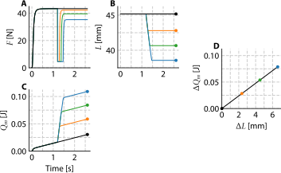
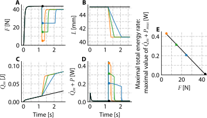

1 General introduction
Movement is fundamental to both animal and human performance. From everyday locomotion to athletic activities, muscles generate the mechanical power required to move the body and interact with the environment. During each movement cycle, muscles alternately lengthen (eccentric contraction) and shorten (concentric contraction), a pattern known as the stretch–shortening cycle (SSC). When muscles lengthen while producing force, they deliver negative mechanical power; when they shorten while producing force, they deliver positive mechanical power.
In locomotor activities such as cycling, rowing, speed skating, and running, mechanical energy is dissipated to the environment, for instance due to frictional forces. Therefore, to sustain motion, muscles must generate net positive mechanical work over their SSCs to offset these energy losses. Some of these dissipative forces, such as aerodynamic drag, increase with movement speed. Consequently, the performance in cyclic motor tasks (e.g. the maximally attainable speed) is largely determined by the average mechanical power output (AMPO) over these SSCs.
Typically, during locomotion activities, movements arise from muscle forces and mechanical interactions with the environment, which together determine the SSCs of the muscles involved. In some situations, muscle length changes can be influenced by the individual, who can adjust — for example — frequency and joint excursion within certain limits (e.g. by changing step length during running). In other situations, when individuals interact with equipment, muscle length changes can be more substantially influenced. For instance, muscle length excursions can be influenced by adjusting crank length in cycling. Thus, by changing equipment, muscle length changes can be influenced, which provides an opportunity to tailor the resulting SSCs to maximise AMPO. Such a design approach, that capitalises on a thorough understanding of the human musculoskeletal system has proven effective, as demonstrated by the Klapskate for speed skating (Ingen Schenau et al. 1996) and the SuperSeat for rowing (Soest and Hofmijster 2009; Soest et al. 2016). Yet, such design approaches remain rare due to limited understanding of how to optimise AMPO, not only at the level of individual muscles but also for whole-body movements.
The main aim of this thesis is to examine how SSCs influence the maximally attainable AMPO of muscle. A secondary aim is to investigate how constraints affect the maximally attainable AMPO. Before doing so, I will first briefly outline the historical development of muscle mechanics and energetics that underly our current understanding. Subsequently, I will show how this knowledge, together with modern optimisation techniques, can be used to reach the aims of this thesis.
1.1 Historical foundations
1.1.1 Origins of muscle energetics and the conservation of energy
An important step towards understanding muscle metabolism and heat production in physical terms came from the work of Antoine Lavoisier and Pierre-Simon Laplace (Lavoisier and Laplace 1780). Using a calorimeter, they measured the heat produced by a guinea pig and compared it with the amount of oxygen the animal consumed. From these experiments they concluded that respiration is essentially a form of slow combustion: the body generates heat through chemical reactions involving oxygen. This work provided one of the first demonstrations that metabolism and heat production could be understood in chemical and physical terms.
In 1835, Antoine César Becquerel and Gilbert Breschet extended these investigations to the tissue level (Becquerel and Breschet 1835). By using thermo-electric instruments, they were able to measure temperature directly within living organs and muscles. These experiments revealed subtle thermal gradients that varied across different tissues. By doing so, Becquerel and Breschet provided a methodological bridge between the macroscopic calorimetry of Lavoisier and later quantitative approaches in muscle physiology.
This experimental approach coincided with a conceptual breakthrough in physics: the formulation of the law of conservation of energy, which states that energy cannot be created or destroyed, but only transformed from one form to another. Experiments by Julius Robert Mayer and James Prescott Joule demonstrated the quantitative equivalence between mechanical work and heat, providing crucial empirical support for this principle. The German physiologist and physicist Hermann von Helmholtz brought these ideas together in his influential 1847 essay Über die Erhaltung der Kraft (“On the Conservation of Force”). Helmholtz argued that the law of conservation of energy is a universal law of nature that must also apply to living organisms. In particular, he emphasised that muscular work cannot arise from a mysterious life force (in accordance with Mayer 1845), but must ultimately derive from chemical processes within the body (Helmholtz 1847, 52). In 1848, a year later, he provided experimental support for the idea that muscle contraction itself produces heat (Helmholtz 1848). By measuring temperature changes in frog muscles while isolating them from blood flow, he showed that the heat originated within the muscle tissue itself and could be interpreted as the conversion of chemical energy within the muscle into heat.
To detect temperature changes in muscle, Helmholtz used a thermopile connected to a galvanometer. The thermopile consisted of three thermocouples arranged so that one sensor was placed in the stimulated muscle and a corresponding reference sensor in the unstimulated contralateral muscle. Because the instrumentation had a slow response time, only the total heat produced over an entire contraction could be measured, rather than the instantaneous heat rate—a limitation that persisted until 1937 (see below). Helmholtz’s thermopile method was subsequently adopted and refined by many later researchers studying muscle energetics.
1.1.2 Nineteenth-century myothermic experiments
Following Helmholtz’s pioneering investigations in 1848, several studies addressed the heat production of muscle contraction. The most comprehensive contribution was Rudolf Heidenhain’s extensive 1864 treatise on the relationship between mechanical work and heat production (Heidenhain 1864). In a remarkably broad series of experiments, Heidenhain investigated numerous factors affecting muscle heat production such as load, fatigue, and stimulation frequency. Heidenhain later recalled that he had initially expected that, under a constant stimulus, a muscle lifting a heavier load would convert a greater proportion of its available energy into mechanical work and therefore produce less heat (Heidenhain 1869, 423). His 1864 experiments, however, yielded the opposite result. He found that increasing the load increased both mechanical work and heat production up to a certain limit; beyond that limit, both decreased, with heat production declining earlier than mechanical work (Heidenhain 1864, 168). From these observations, Heidenhain concluded that the total energy liberated (i.e. the sum of heat production and mechanical work) by a muscle is not fixed by the stimulus alone, but is influenced by the mechanical conditions under which the muscle contracts. He therefore argued that muscle metabolism continues throughout muscle contraction and varies with the mechanical conditions under which the muscle operates.
Following Heidenhain’s work, Adolf Fick became the central figure in the later nineteenth-century study of muscle heat production. He pursued the same basic problem — how heat production, mechanical work and chemical energy were related. After improving the myothermic methods, Fick believed that he could express muscle heat production in absolute units and thereby estimate the mechanical efficiency of the isolated frog muscle (Fick 1878). He found that, at maximum, roughly one-third of the energy liberated by the muscle could appear as mechanical work. Fick also examined how this efficiency depended on the mechanical conditions of the muscle and other factors such as muscle temperature. An important question for later work was whether heat production differs between a shortening muscle and a muscle held at constant length. In 1884, Fick compared an isometric contraction with a contraction in which the muscle first developed full tension and was then released to shorten (Fick 1884). He found that when an active muscle was allowed to shorten it produced slightly more heat (~10%) than when an active muscle was held isometrically. Fick interpreted this as evidence that shortening itself could evoke additional chemical processes, rather than simply using a pre-existing store of elastic energy.
The interpretation of Fick his 1884 experiments remained controversial. Fritz Schenck later repeated similar experiments and found no clear difference between the heat produced in the two conditions investigated by Fick (Schenck 1892). Magnus Blix, a student of Adolf Fick, later addressed the issue by arguing that heat production was not governed by the mechanical work performed, but rather depended on the length of the muscle (Blix 1902). As he put it, the relevant conclusion was not that “work produces heat”, but that “length produces heat”. Thus, by the beginning of the twentieth century, myothermal experiments had established that muscle heat production depended on the mechanical conditions of contraction, but they had not established how. It remained unclear whether the relevant factor was the mechanical work produced by the muscle, muscle force/tension, muscle length, muscle shortening itself, or some artefact of the delicate thermoelectric methods used to measure (small) temperature changes.
1.1.3 A.V. Hill’s entry into muscle thermodynamics
In 1905, a young Archibald Vivian Hill entered Trinity College Cambridge to study mathematics. During his first year, however, he began to lose interest in subjects he regarded as somewhat removed from physical reality. A decisive influence at this stage was his tutor, Walter Morley Fletcher, who, together with Frederick Gowland Hopkins, was engaged in pioneering studies on the production of lactic acid in muscle. Hill shared with Fletcher a strong interest in athletics, which provided a natural point of contact. Through their conversations, Fletcher introduced him to the production of lactic acid during muscular activity, its removal in the presence of oxygen, and its relation to fatigue and recovery after exercise. Although these ideas made a lasting impression, Fletcher advised him to continue with mathematics for the time being. Following this advice, Hill continued studying mathematics at first, but decided to change direction later. He resolved to become a physiologist and he started studying physiology, chemistry, and physics at Cambridge. This interdisciplinary path was not unusual: John Newport Langley, then head of the Physiological Laboratory, had himself first studied mathematics before turning to natural sciences.
In November 1909, Langley suggested that Hill should investigate the efficiency of muscle as a thermodynamic machine. This problem, previously studied by Heidenhain and Fick, was particularly promising in the light of Fletcher and Hopkins’ work on muscle metabolism under aerobic and anaerobic conditions. Looking back more than half a century later, Hill remarked how striking it was that Langley, “very far from being a biophysicist or biochemist”, had proposed a problem so well suited both to the Cambridge environment and to his own inclinations, and he considered it likely that this decision had been made in consultation with colleagues, among them Fletcher (Hill 1970a, 37). In Trails and Trials in Physiology (1965, 5), he also emphasised the importance of the apparatus that Langley had acquired in 1904 from Magnus Blix: a highly sensitive combination of thermocouple and galvanometer which, according to Blix, was capable of detecting the heat produced in a single muscle twitch. This marked the beginning of over fifty years of experiments conducted by A.V. Hill and colleagues on muscle heat production.
1.1.4 The (visco-)elastic theory of muscle
Hill was well aware of the earlier investigations of Heidenhain and Fick (whom he often described as “a very wise man”), but he was not entirely convinced by Fick’s finding that more heat was produced when an active muscle was allowed to shorten compared to when it was held isometrically. Hill raised several methodological concerns about these earlier experiments, particularly that in Fick’s apparatus the muscle, after shortening, could not reliably return to the exact same position on the thermopile, potentially distorting the measurements and contributing to the large variance in the results.
Hill decided to replicate and refine Fick’s experiments, using a more controlled setup that would reduce these methodological issues. In his own experiments, Hill measured the heat produced by a muscle that was allowed to shorten at different time points after stimulation and compared this to heat production during isometric contractions. While later found to be incorrect based on subsequent results from his own laboratory, Hill found that heat production was unaffected by shortening when the muscle was allowed to shorten only after it had reached maximal tension. Based on these results, he concluded that “after the maximum tension has been developed, the muscle is merely a new elastic body, whose tension energy may be used indifferently for the accomplishment of work or the production of heat” (Hill 1913). This theory — later refined into the idea of muscles as visco-elastic bodies — then prevailed in Hill’s research for the next 25 years.
1.1.5 Fenn’s challenge to the (visco-)elastic theory of muscle
At the suggestion of A.V. Hill, Wallace Fenn performed a series of experiments that were published in his famous 1923 paper. In his first set of experiments, Fenn repeated some of the work done by Heidenhain and Fick. By using an isotonic lever, the muscle remained isometric until it had developed sufficient force to lift an attached mass. Once the mass was lifted, the muscle shortened at approximately constant force until the mass — and thus the muscle — returned to its initial position.
Using this setup, muscle heat and the positive mechanical work performed were measured separately and compared with values obtained during isometric contractions. Fenn’s experiments confirmed the pattern previously observed by Heidenhain: as the load increased, mechanical work and heat production initially increased, but declined again at higher loads. These findings reinforced Heidenhain’s conclusion that the total energy liberated by a muscle depends on the mechanical conditions under which it contracts. The comparison with isometric contractions further demonstrated that additional energy was liberated when the muscle shortened and performed work. As Fenn concluded: “Whenever a muscle shortens upon stimulation and does work in lifting a weight, an extra amount of energy is mobilised which does not appear in an isometric contraction. Hence less energy is liberated in an isometric contraction than in any contraction in which the muscle is allowed to shorten” (Fenn 1923).
In his Nobel Prize lecture (for the 1922 award) at the end of 1923, Hill recognised the implications of Fenn’s findings: “It is clear also that those of us who supposed that a stimulated muscle is simply a new elastic body were wrong. A muscle may possess some elastic properties, but it requires more energy to do more work, a fact which is fundamentally in opposition to the elastic body theory.” Despite the recognition of Fenn’s findings, Hill “went on thinking in terms of it for a long time after” (Hill 1970b, 2).
1.1.6 The heat of shortening and the dynamic constants of muscle
In the years following Fenn’s work, many attempts were made to further clarify his findings. However, the success was limited, except for the consistent observation that additional energy is liberated when muscles shorten and perform mechanical work (Hill 1965, 148). Nevertheless, important methodological developments occurred, particularly in the refinement of thermocouples. The work of A. C. Downing enabled the construction of fast-responding thermocouples, which, by 1937, made it possible to measure heat production during muscle contraction (Hill 1937). This represented a substantial improvement over earlier instruments, whose slow response times caused heat measurements to be lumped at the end of contractions. These technical advances provided the foundation for a new generation of experiments on muscle energetics.
Using these improved instruments, A.V. Hill explored the heat production of muscle during two distinct experiments in his famous 1938 paper (Hill 1938). In the first set of experiments, a muscle first isometrically contracted until the muscle force reached a steady plateau. Then, a magnet was released from the lever causing a sudden drop in the force acting on the muscle after which the muscle shortened against a constant load until a fixed shortening distance was reached (see Figure 1.1). While the force acting on the muscle (after the magnet was released) was held constant across trials, the permitted shortening distance varied. Hill observed that the heat produced increased linearly with shortening distance (see Figure 1.1D). Because muscle force was held constant, this meant that that mechanical work also scaled linearly with shortening. From these observations, Hill formulated the relation: \[ E = (F + a) \cdot \Delta L \] where \(F\) is the muscle force during shortening, \(\Delta L\) is the shortening distance, and \(a\) is a constant representing the so-called shortening heat.

In a second set of experiments, Hill performed similar experiments as in the first set, but this time varied the force acting on the muscle while keeping the shortening distance constant (see Figure 1.2). These experiments revealed that muscle heat production was independent of muscle force (see Figure 1.2C). Together, both experiments showed that the maximum rate of heat production plus the instantaneous mechanical power decreased linearly as the force during shortening approached the maximum isometric force, reaching zero at maximum isometric force (see Figure 1.2E). This led to the second fundamental relation: \[ \dot{E} = b \cdot (F_0 - F) \] where \(F_0\) is the maximal isometric muscle force and \(b\) is a constant.

By differentiating the first equation over time and combining it with the second, Hill derived the characteristic relation: \[ \dot{E} = (F+a) \cdot v = b \cdot (F_0 - F) \] from which an explicit relation between shortening velocity \(v\) and muscle force \(F\) can be obtained: \[ v = b \cdot \frac{F_0 - F}{F+a} \]
This formulation provided a quantitative framework linking muscle mechanics and energetics, and marked a decisive shift in the conceptual understanding of muscle function. While the equation was derived from heat measurement, it was subsequently confirmed by directly relating muscle force and velocity measured at the instant immediately after the magnet was released from the lever. On the basis of these results, Hill (finally) rejected the (visco-)elastic theory of muscle. Instead, he proposed that active muscle should be viewed as a two-component model, consisting of an undamped elastic element arranged in series with a contractile element governed by the characteristic force–velocity relationship. Together, these elements form the muscle–tendon complex (MTC), which is often extended to also include an elastic element parallel to the contractile element (see Figure 2.2). This model is now known as the Hill-type MTC model.
1.2 Maximising average mechanical power output
1.2.1 From instantaneous to average mechanical power output
From the groundbreaking work of A.V. Hill, we have learned two fundamental principles: 1) that the power output of the contractile element (CE) depends on CE shortening velocity (with a specific velocity at which instantaneous mechanical power output is maximal); and 2) that CE is in fact the “motor” of the muscle–tendon complex (MTC), with the series elastic element (SEE) and parallel elastic element (PEE) being primarily passive elastic structures. As such, maximising AMPO requires MTC length over time to allow CE to produce maximal AMPO during SSCs.
While it is obvious that an MTC should maximise positive mechanical work and minimise negative mechanical work in order to maximise AMPO, it is far from trivial what MTC length and stimulation over time yield maximal AMPO. To minimise negative mechanical work, stimulation should cease well before lengthening begins, and CE should ideally lengthen at very (s)low velocities because of the effect of the eccentric CE force–velocity relationship. However, such strategies are suboptimal for AMPO: the time spent lengthening cannot be used to produce positive mechanical work, and early deactivation reduces positive mechanical work during shortening. To maximise positive mechanical work, one might argue that CE should shorten at a velocity that maximises instantaneous mechanical power output. However, CE force also depends on CE length, with CE force decreasing at both shorter and longer lengths than the optimal length. Therefore, to optimise AMPO, it may be beneficial for CE to operate over a limited range of the CE force–length relationship. This raises several open questions: over what range should CE operate to maximise AMPO? At what shortening velocity? And how much time should be spent on shortening (i.e., maximising positive mechanical work) versus lengthening (i.e., minimising negative mechanical work) in order to maximise AMPO?
Finding the CE/MTC length and stimulation over time for maximal AMPO is inherently complex. For instance, if one were to change the CE/MTC length excursion, how should other parameters, such as cycle frequency, be adjusted to maximise AMPO? Let alone how stimulation over time should be adjusted. Moreover, even if maximal AMPO could be experimentally identified in a single muscle, it remains unclear how the results translate across different muscles and/or individuals. Muscle properties vary across species and therefore the effect of CE/MTC length and stimulation over time on the maximal attainable AMPO may differ across muscles. As a result, experimental studies alone provide limited insights.
1.2.2 Predicting maximal AMPO of MTC Models via Optimal Control
MTC models are a valuable tool for studying muscle behavior. One of the pioneers in this field, Herbert Hatze, complemented A.V. Hill’s work on muscle contraction dynamics with insights into muscle excitation dynamics (Hatze 1981). Although modern MTC models combine Hill-based contraction dynamics with excitation dynamics to which Hatze made substantial contributions, they are still commonly referred to as Hill-type MTC models. These models have proven useful not only for understanding isolated muscle behavior (e.g. Curtin et al. 1998; Ingen Schenau et al. 1988; Lemaire et al. 2016; Sandercock and Heckman 1997; Wakeling and Johnston 1999; Williams et al. 1998; Zandwijk et al. 1996), but also, when combined with skeletal models into musculoskeletal models, to simulate complex whole-body tasks such as cycling (Raasch et al. 1997; Soest and Casius 2000), jumping (Anderson and Pandy 1999; Soest et al. 1993) and the long jump (Hatze 1981). Such musculoskeletal models have yielded predictions consistent with experimental observations and have also been applied to study various aspects of animal behavior (e.g. Biewener et al. 2014; Bijlert et al. 2024; Cox et al. 2019; Heers et al. 2018). These studies indicate that Hill-type MTC models are a powerful tool to examine the influence of CE/MTC length and stimulation over time on AMPO.
To find the optimal CE/MTC length and stimulation over time that maximise AMPO (using a Hill-type MTC model), these variables must be specified at each time instance. In discrete form, when the time axis is divided into \(n\) points, both CE/MTC length and stimulation must be determined at each point, resulting in a \(2n\)-dimensional optimisation problem. In a classical forward simulation framework, one would use the discretised CE/MTC length and stimulation over time as inputs to simulate the dynamics, after which the objective is evaluated. This approach often performs poorly for the situation described above: small changes in inputs (here: CE/MTC length and stimulation over time) can lead to large and nonlinear effects on the objective, resulting in a highly irregular optimisation landscape, making it difficult to find the global optimum.
As an alternative, Optimal Control techniques can be used to find the CE/MTC length and stimulation over time that maximise AMPO. In this approach, both the inputs (at the \(n\) time points) and the states (at the \(n\) time points) are treated as optimisation variables, with the system dynamics imposed as constraints. This allows the optimiser to select the full trajectory of states and inputs simultaneously while ensuring that the dynamics are respected. By including the dynamics as constraints, the sensitivities of the states with respect to the inputs—which are implicit in classical forward simulation—are captured directly through the Lagrangian and the resulting KKT system. The Hessian of the Lagrangian incorporates all relevant partial-derivatives, giving the optimiser precise guidance on how changes in inputs propagate through the states to affect the objective. Consequently, the problem becomes well-structured and numerically stable, enabling efficient convergence to the optimal trajectories even in complex, nonlinear systems – such as muscles.
1.3 Thesis outline
In this thesis, we brought together the current detailed understanding of muscle mechanics and energetics with developments in optimisation techniques to examine how various SSCs influence the maximally attainable AMPO. In addition, we investigated the role of constraints on the maximally attainable AMPO.
In Chapter 2, we evaluated the accuracy of commonly used experimental methods — such as quick-release and step-ramp experiments — for estimating key muscle properties in experiments. Despite their widespread use, these methods have not been formally evaluated. A major challenge in experimentally addressing the accuracy of parameter estimation is that the true underlying muscle properties are, by definition, unknown. To overcome this limitation, we adopted a modelling approach in which experimental data were simulated using a Hill-type muscle–tendon complex (MTC) model with a given set of muscle properties. This allowed a direct evaluation of the accuracy of the estimated properties against their a priori known muscle properties.
In Chapter 3, we combined in situ experiments with Hill-type MTC modelling to examine the influence of various SSCs on the maximally attainable AMPO of rat m. gastrocnemius medialis. For each specimen, key muscle properties were estimated individually using the methodology developed in Chapter 2. This allowed us to compare the experimental results with model-based predictions, which showed a near-perfect correlation between measured and predicted AMPO (r2 > 0.98). The strong correspondence then justified the use of a Hill-type MTC model to explore how various SSCs influence the maximally attainable AMPO across a wide range of conditions.
In Chapter 4, we used an approach similar to that used in Chapter 3 and applied it to the human knee-extensor muscle group. Using a Hill-type MTC model, we simulated various SSCs to examine their influence on the maximally attainable AMPO at the joint level. From these simulations, we selected nine insightful conditions to be evaluated experimentally. In the experiment, knee joint movements were fully imposed by a knee dynamometer, while participants were instructed to maximise AMPO. Measured AMPO matched the model predictions reasonably well, confirming that the Hill-type MTC model reliably captures the influence of SSCs on the maximally attainable AMPO at the joint level in human participants.
In Chapter 5, we investigated the role of radial pedal forces in sprint cycling performance by using an optimal control musculoskeletal model to predict the maximally attainable AMPO under varying constraints on radial pedal forces. Since radial pedal forces do not contribute to mechanical power, it has been (often) suggested that radial pedal forces arise from suboptimal pedaling technique and that limiting these would increase AMPO and efficiency. However, this can never be true from the first principle of optimal control theory: introducing an additional constraint on the controls (here: restricting radial pedal forces) cannot increase the optimal value of the objective (here: maximal AMPO). Using a musculoskeletal model, we showed how individual muscle power output changes across different levels of allowed radial pedal forces. Specifically, we showed that when radial pedal forces are highly constrained, muscles not only produce much less positive mechanical power, but some muscles also substantially increase their negative mechanical power output. These findings are a clear example of the influence of constraints on the maximally attainable performance.
In Chapter 6, we discussed the broader implications of the findings presented in this thesis. We reflected on the transition from highly controlled in situ experiments on rat muscle to less controlled in vivo experiments on human muscle, and examined the sensitivity of our results. In addition, we discussed how findings for an individual muscle translate to whole-body movements involving multiple muscles. We further related maximally attainable AMPO across different movement conditions to understand the influence of several constraints on performance. Overall, the points addressed in Chapter 6 highlight that maximising AMPO in a motor task requires consideration of both the intrinsic power-producing capacity of muscle and the constraints imposed by the task.